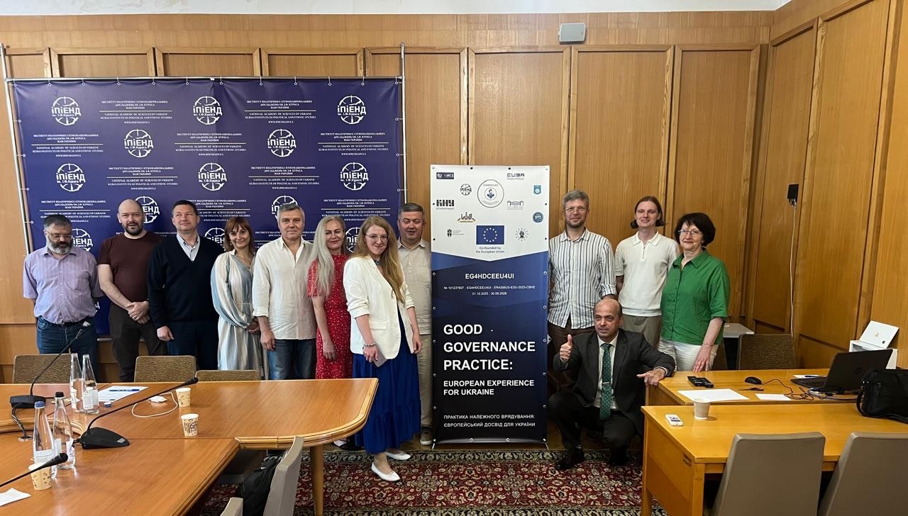
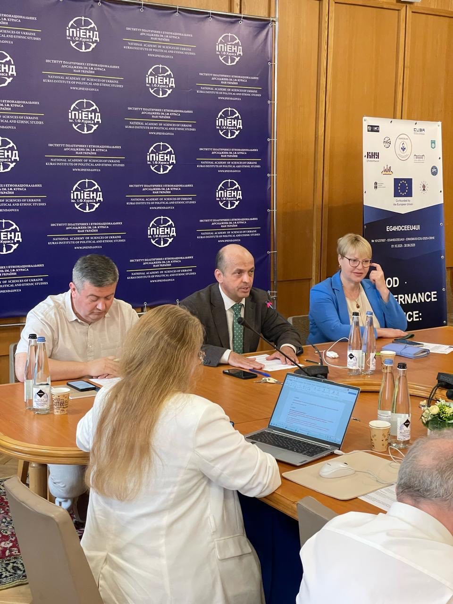
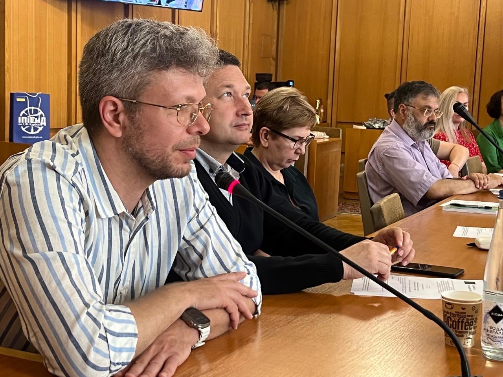

European Good Governance Practices for Ukraine Discussed at a Round Table within the Erasmus+ Project




On 23 June 2026, a round table dedicated to European good governance practices and opportunities for their implementation in Ukraine was held at the Institute of Political and Ethno National Studies named after I. F. Kuras of the National Academy of Sciences of Ukraine. The event was organized within the Erasmus+ CBHE project “Good Governance Practice: European Experience for Ukraine” (EG4HDCEEU4UI, No. 101237607, ERASMUS-EDU-2025-CBHE), coordinated by and with Dragomanov Ukrainian State University as the grant holder. The event was attended by representatives of the universities participating in the project consortium: Dragomanov Ukrainian State University, Borys Grinchenko Kyiv Metropolitan University, Nizhyn Mykola Gogol State University, Kryvyi Rih National University, Vasyl Stefanyk Carpathian National University, and Berdyansk State Pedagogical University, as well as the Institute of Political and Ethno National Studies named after I. F. Kuras of the National Academy of Sciences of Ukraine. Experts from the National Academy of the Security Service of Ukraine and State University of Trade and Economics also joined the discussion. The civil society sector was represented by the Association of Political Sciences of Ukraine and the Forum Center for Strategic Communications. The round table featured presentations by:
- Olha Volianiuk, PhD in Political Science, Dragomanov Ukrainian State University - on Good Governance as a political transformation: from governance standards to a value-based architecture of social cohesion;
- Olena Samoilenko, PhD in Pedagogical Sciences, Nizhyn Mykola Gogol State University - on good governance and the development of educational and professional programmes in the context of partnerships among universities, employers and communities;
- Yevheniia Mishchuk, Doctor of Economic Sciences, Kryvyi Rih National University - on mechanisms for managerial decision-making within the university governance system.
The participants of the round table - academics and educators - discussed key areas for further implementation of good governance practices in Ukraine, including prospects for the development and implementation of the “Good Governance” educational programme for higher education students. The materials of the round table are available via the link.